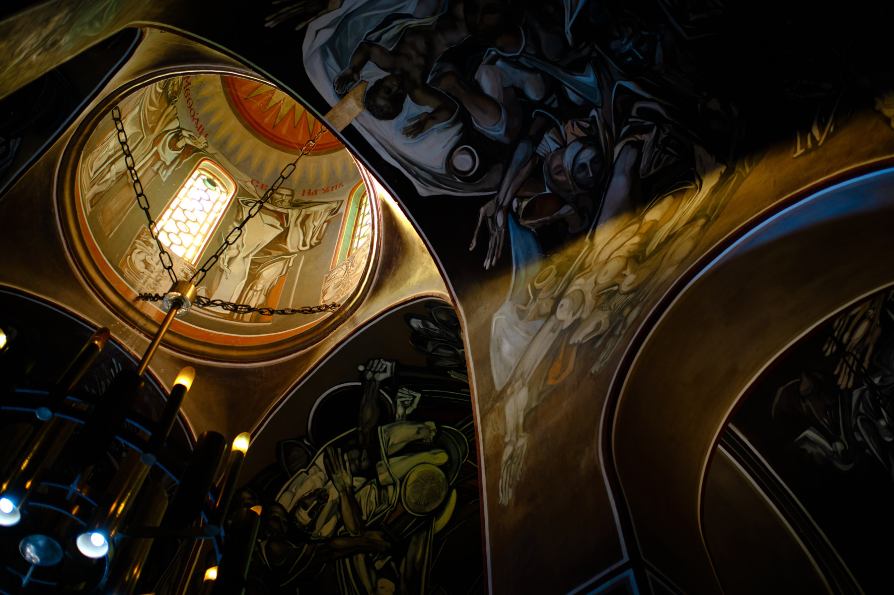
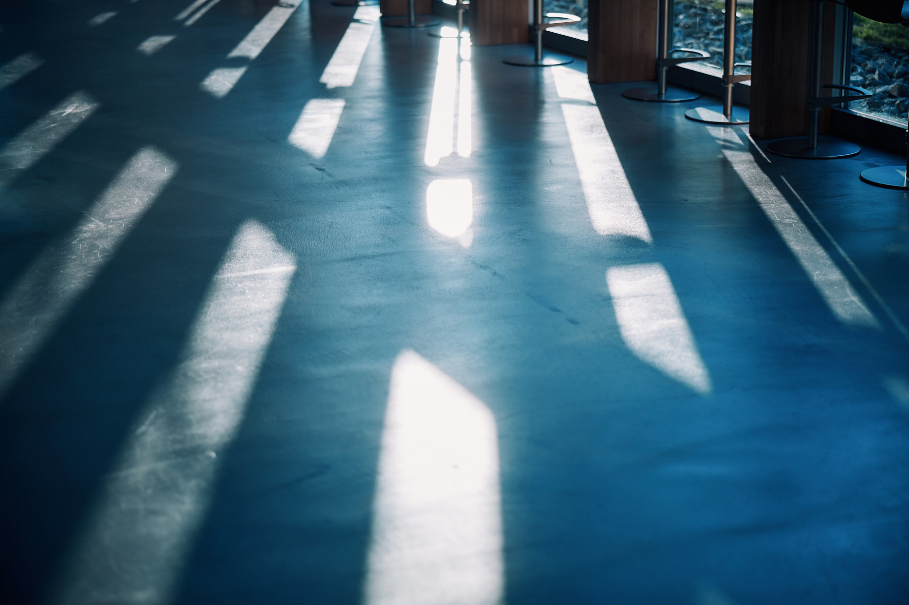
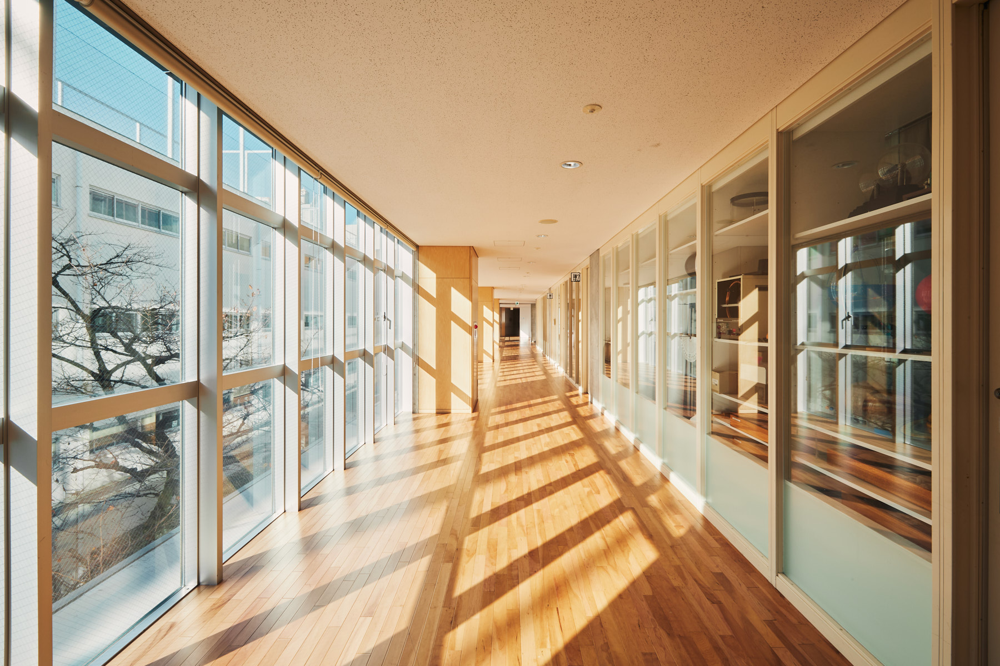
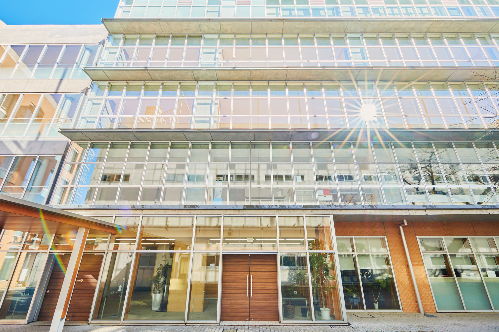
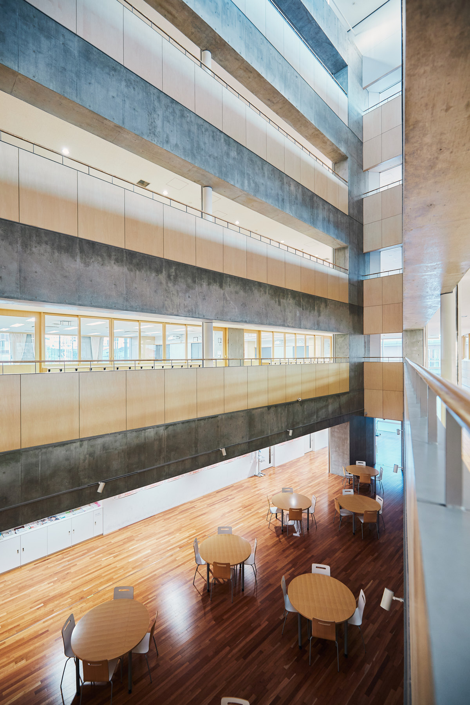
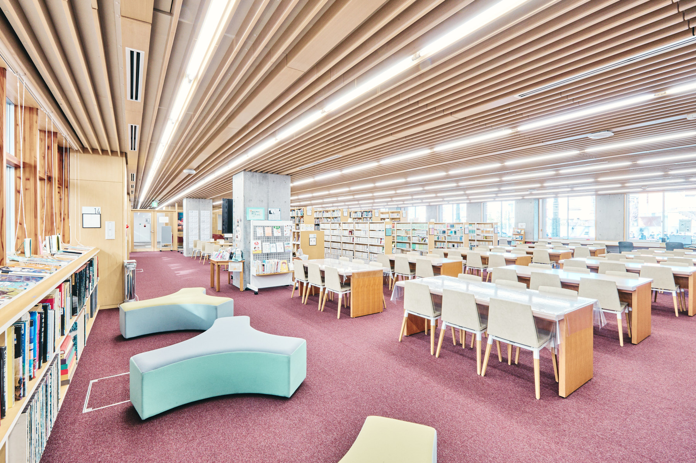
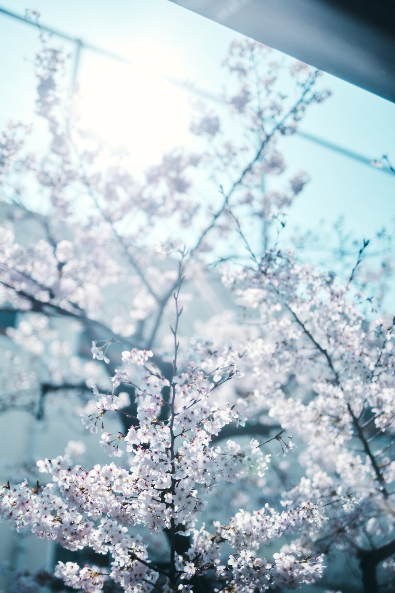
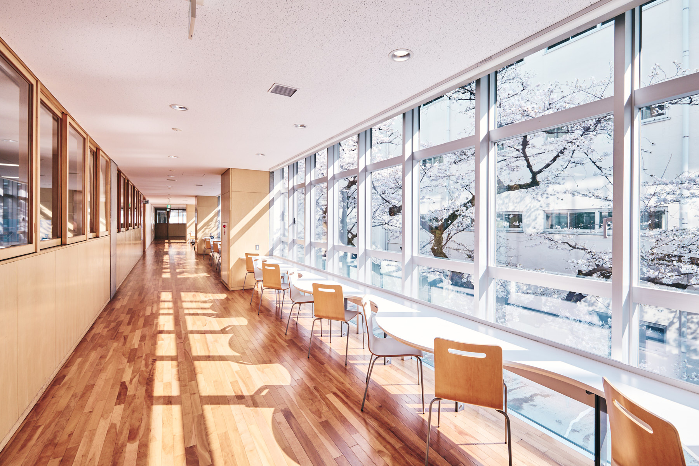

Work / Architecture
Architecture & Interior.
Building and interior photography. Light through glass curtain walls, the architecture of seasons.








Work / Architecture
Building and interior photography. Light through glass curtain walls, the architecture of seasons.







